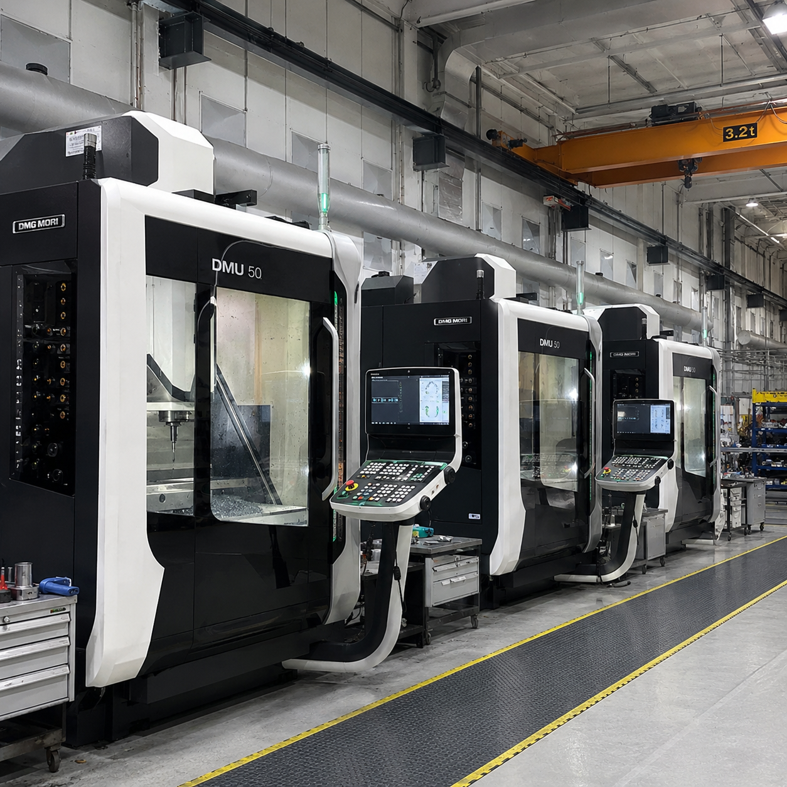
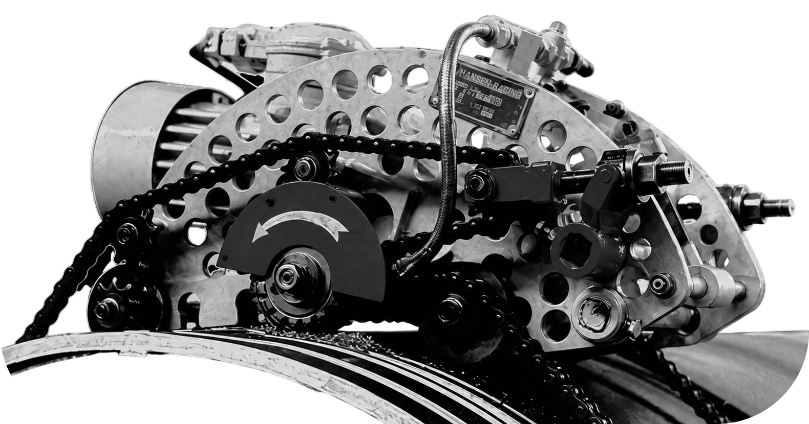
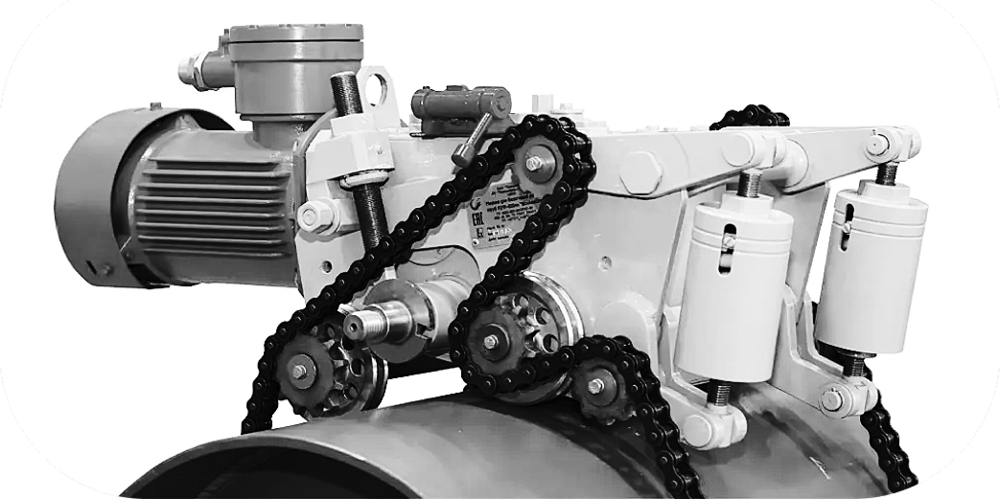
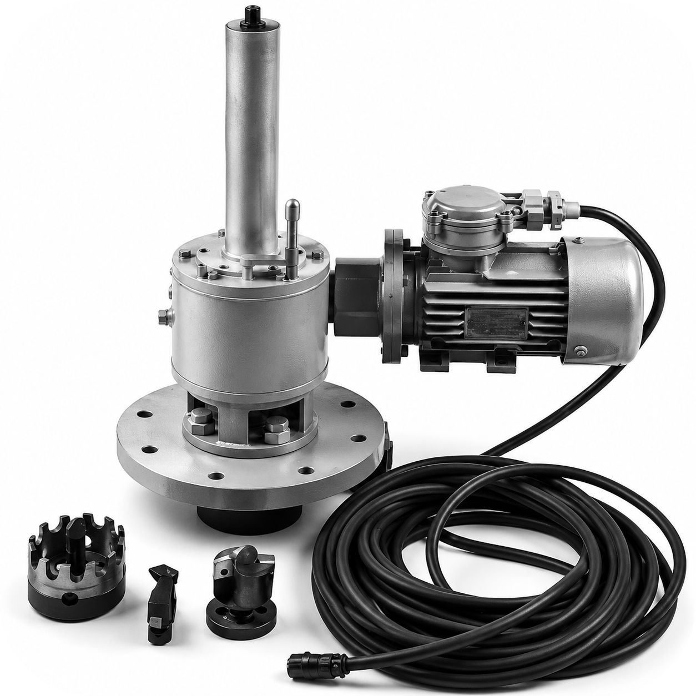
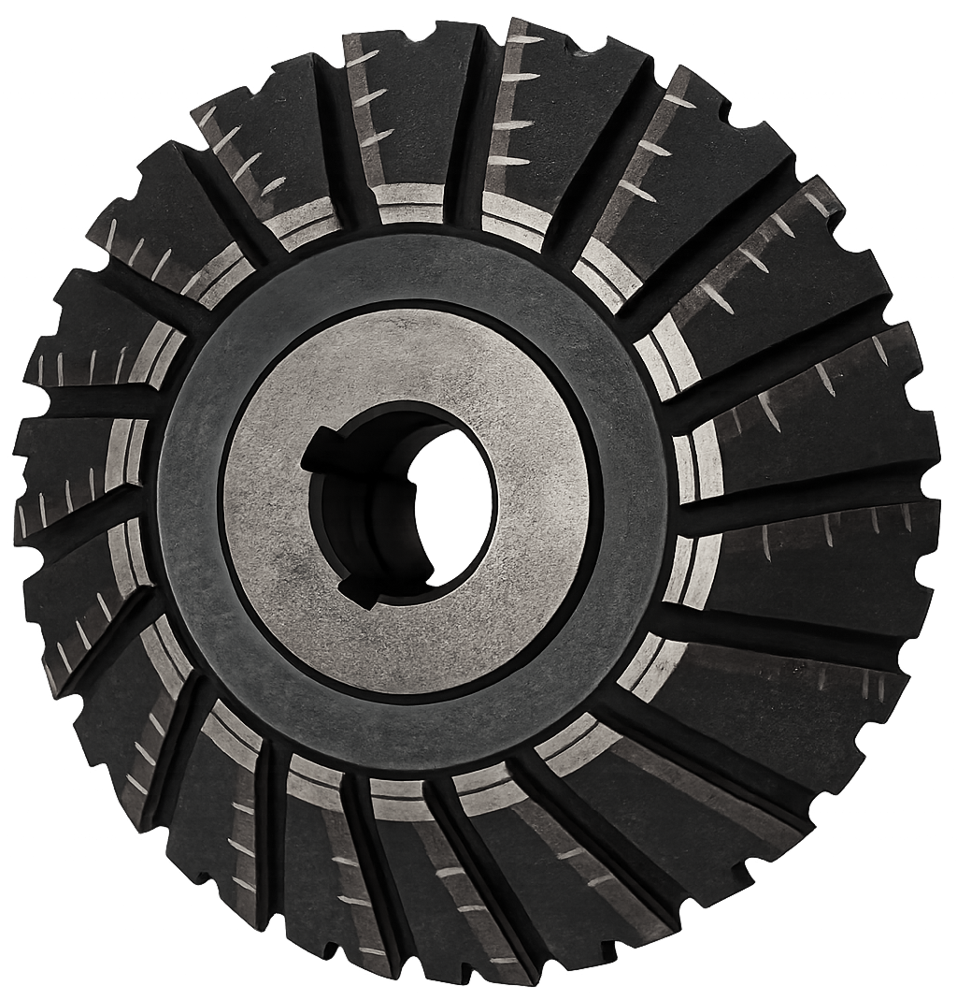
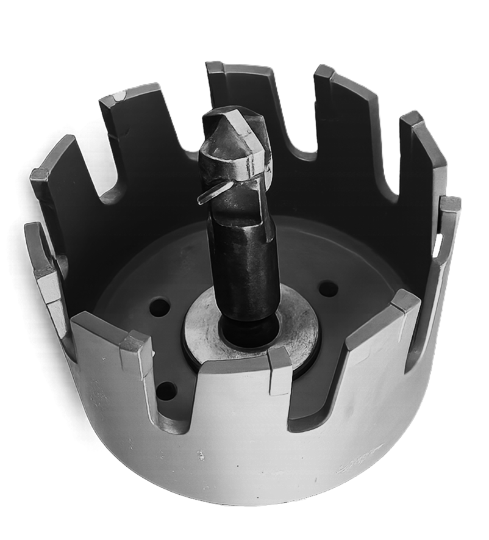

Manufacture of tools for oil & gas pipeline repair.
PNRS LLC — for over 25 years, the company has been supplying equipment for the repair of oil and gas pipelines across all gas and oil networks of Eurasia, and successfully cooperates with major raw-material suppliers.
For more than a quarter of a century, we have been successfully manufacturing chain-driven pipe cold cutting and beveling machines (SM-307) and hot tapping machines that make branch connections of various diameters - 50, 150, 300 and 500 mm - in live, pressurized oil and gas pipelines without interrupting flow.

Chain-driven, spark-free cutting of large-diameter in-service pipes, no heat, no sparks, weld-ready edge.
View details
Chain-driven, spark-free cutting in-service pipes, no heat, no sparks, weld-ready edge.
View details
Make new branch connections on live, pressurized pipelines without interrupting flow.
View details
Aftermarket profile / angle milling cutters — equivalent to the FEIN original, made to fit FEIN pipe cold cutting & beveling machines for a clean, weld-ready bevel across a wide range of pipe diameters.
View details
Aftermarket annular cutters (hole saws) — equivalent to the T.D. Williamson original, made to fit T.D. Williamson hot tapping machines. Cut branch outlets on live, pressurized pipelines without interrupting flow.
View details